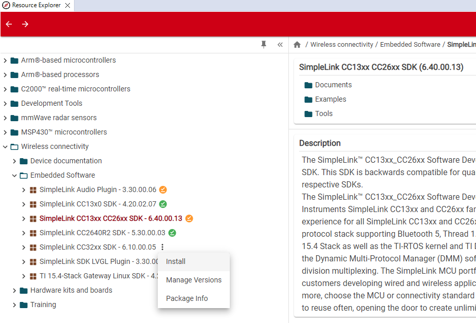
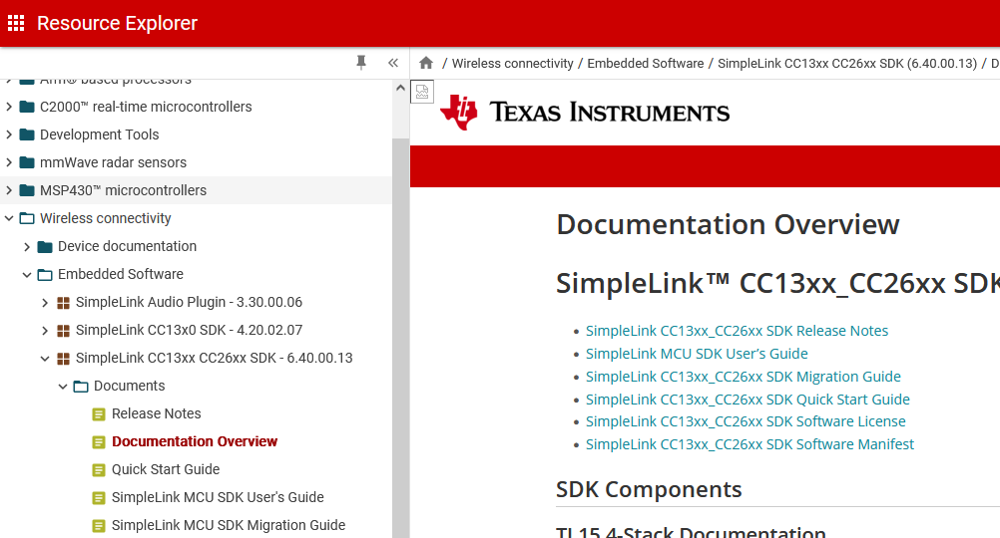
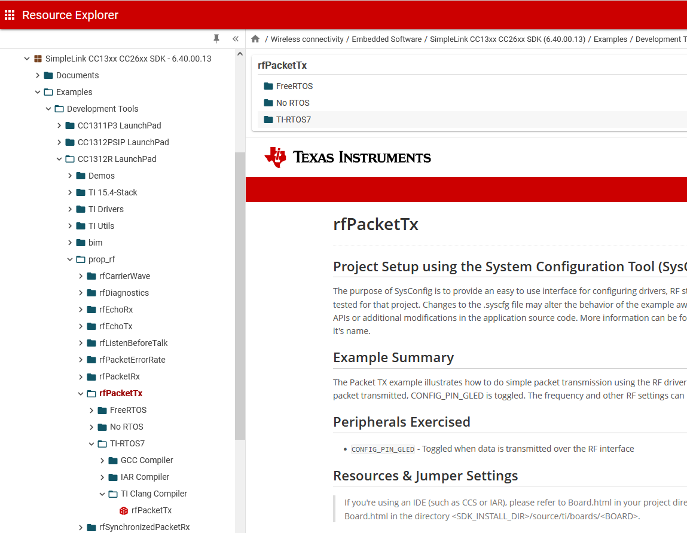
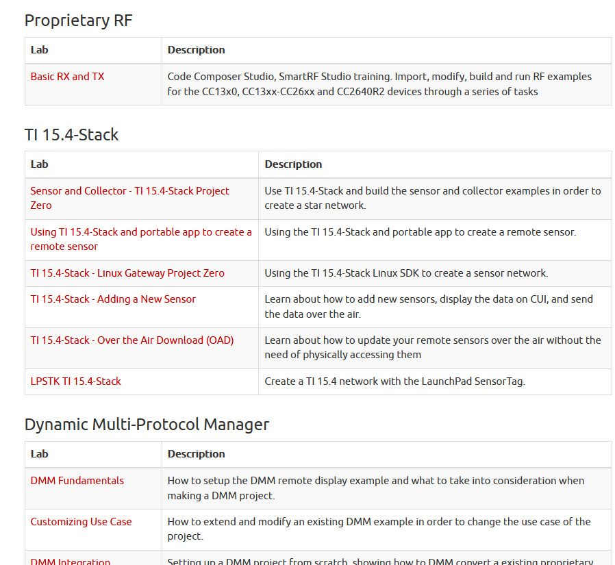

Proprietary RF Quick Start Guide¶
This short tutorial gets you started with the SimpleLink CC13xx/CC26xx SDK eco system.
0. Basics¶
The CC13xx and CC26xx combines a flexible, very low-power RF transceiver with a powerful 48-MHz Arm® Cortex® -system core microcontroller in a platform supporting multiple physical layers and RF standards. A dedicated Radio Controller (Cortex® -M0) handles low-level RF protocol commands that are stored in ROM or RAM. To be able to provide low power and high functionality, power domains and modules on the chip have to be turned on and of in a correct sequence. Using the TI provided drives achieves this. It is also recommended that CC13xx and CC26xx runs an OS to schedule access to the peripherals on the chip. TI provides the following in the SDK:
TI-RTOS
noRTOS
FreeRTOS
You can find chapters on all of these in the Proprietary RF User’s Guide.
Other community developed OSes are also available
1. Get the SimpleLink CC13xx/CC26xx SDK¶
It is recommended to download the SimpleLink CC13xx/CC26xx SDK via the resource explorer in CCS.
Figure 94. The resource explorer in CCS.¶
Or alternatively, download the SimpleLink CC13xx/CC26xx SDK manually from the TI website.
The SimpleLink CC13xx/CC26xx SDK contains:
Libraries
TI-RTOS kernel (previously named SYS/BIOS)
TI-Drivers (high-level hardware abstraction)
DriverLib (low-level hardware abstraction)
TI 15.4 Stack
TI BLE-Stack for CC1352XX.
Resources
Example projects for the TI-RTOS kernel and TI-Drivers
User guides
API references
2. Bookmark the SDK Documentation Overview¶
The documentation overview page is the entry point for all SDK-related documentation and it is highly recommended to bookmark it in the browser.
Go to http://dev.ti.com/tirex/
Software
-->SimpleLink CC13xx/CC26xx SDK-->Documentation Overview
Figure 95. The SDK documentation overview page on the TI Resource explorer.¶
It is also available offline in the Resource Explorer of CCS.
3. Try out the SDK Example Projects¶
The SimpleLink CC13xx/CC26xx SDK contains a set of proprietary RF examples for creating a Proprietary RF protocol with CC13xx or CC26xx. All the RF driver examples have support for the CCS and IAR IDE.
Figure 96. CCS Resource Explorer Examples¶
For more information about the different examples provided, see the Proprietary RF Examples Guide.
4. Follow the SimpleLink Academy Trainings¶
SimpleLink Academy contains multiple tutorials for all SimpleLink devices.
Figure 97. SimpleLink Academy.¶
5. Read the User’s Guides¶
All software concepts are explained there. You will find all user’s guides mentioned on the documentation overview page of the SDK:
Proprietary RF User’s Guide
6. Watch the Kernel Workshop Videos¶
If you have never used TI-RTOS before, these online video workshops give you a fast start.

7. Look into the API References¶
The API references explain details about all functions and types in the SDK. They can be reached from the documentation overview page of the SDK:
8. Consult the Technical Reference Manual¶
The CC13x2 CC26x2 SimpleLink Wireless MCU Technical Reference Manual describes the CC13xx and CC26xx family in more detail. It is helpful when extending and writing TI Drivers.
9. Ask for support on E2E¶
Search for similar questions on E2E : https://e2e.ti.com/support/
When asking a question:
Compress information: Do not write essays, but be precise.
Describe: What do you want? What did you try? What is the error?
Essential facts: What SDK version are you using? What device and board? What example project is your project based on?
When contacting TI customer support:
Isolate the problem first.
Provide a minimal working example application.
This saves time for you and us and will lead to better response times.